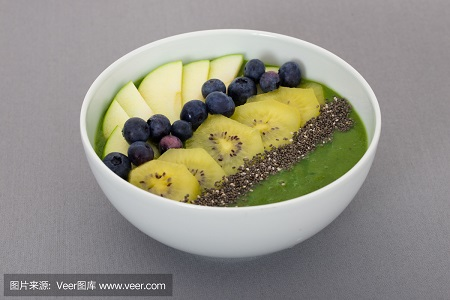

<!DOCTYPE html>
<html>

	<head>
		<meta charset="utf-8" />
		<title></title>
	</head>

	<body>

	</body>

</html>
<!DOCTYPE html>

<head>
	<meta charset="utf-8" />
	<title></title>
	<style>
		* {
			margin: 0;
			padding: 0;
		}
		
		body {
			color: #666;
			width: 960px;
			background-image: url(img/57436254060546986.jpg);
			background-size: cover;
			margin: 0 auto;
		}
		
		.nav {
			width: 600px;
			height: 50px;
			font: bold 0/50px Arial;
			text-align: center;
			margin: 0px auto;
			border-radius: 8px;
		}
		
		.nav a {
			display: inline-block;
			-webkit-transition: all 0.2s ease-in;
			-moz-transition: all 0.2s ease-in;
			-o-transition: all 0.2s ease-in;
			-ms-transition: all 0.2s ease-in;
			transition: all 0.2s ease-in;
		}
		
		.nav a:hover {
			-webkit-transform: rotate(10deg);
			-moz-transform: rotate(10deg);
			-o-transform: rotate(10deg);
			-ms-transform: rotate(10deg);
			transform: rotate(10deg);
		}
		
		.black {
			background: #2c2c2c;
			box-shadow: 0 7px 0 #0b0b0b;
		}
		
		.nav li {
			position: relative;
			display: inline-block;
			padding: 0 16px;
			font-size: 13px;
			text-shadow: 1px 2px 4px rgba(0, 0, 0, .5);
			list-style: none outside none;
		}
		
		.nav li::before,
		.nav li::after {
			content: "";
			position: absolute;
			top: 14px;
			height: 25px;
			width: 1px;
		}
		
		.nav li::after {
			right: 0;
			background: -moz-linear-gradient(top, rgba(255, 255, 255, 0), rgba(255, 255, 255, .2) 50%, rgba(255, 255, 255, 0));
			background: -webkit-linear-gradient(top, rgba(255, 255, 255, 0), rgba(255, 255, 255, .2) 50%, rgba(255, 255, 255, 0));
			background: -o-linear-gradient(top, rgba(255, 255, 255, 0), rgba(255, 255, 255, .2) 50%, rgba(255, 255, 255, 0));
			background: -ms-linear-gradient(top, rgba(255, 255, 255, 0), rgba(255, 255, 255, .2) 50%, rgba(255, 255, 255, 0));
			background: linear-gradient(top, rgba(255, 255, 255, 0), rgba(255, 255, 255, .2) 50%, rgba(255, 255, 255, 0));
		}
		
		.black li::before {
			left: 0;
			background: -moz-linear-gradient(top, #2c2c2c, #000 50%, #2c2c2c);
			background: -webkit-linear-gradient(top, #2c2c2c, #000 50%, #2c2c2c);
			background: -o-linear-gradient(top, #2c2c2c, #000 50%, #2c2c2c);
			background: -ms-linear-gradient(top, #2c2c2c, #000 50%, #2c2c2c);
			background: linear-gradient(top, #2c2c2c, #000 50%, #2c2c2c);
		}
		
		.nav a,
		.nav a:hover {
			color: #fff;
			text-decoration: none;
		}
		#lunbotu {
			width: 450px;
			height: 450px;
			overflow: hidden;
			position: relative;
			margin: 0px auto;
			position: relative;
		}
		
		#banner {
			height: 460px;
			width: 6130px;
			position: absolute;
			transition: 2s;
			left: 0px;
		}
		
		#banner img {
			float: left;
		}
		
		#biao {
			position: absolute;
			top: 750px;
			left:45%;
		}
		
		#biao_1 {
			height: 20px;
			width: 20px;
			border: 1px solid #000;
			z-index: 10;
			float: left;
			list-style: none;
			border-radius: 50%;
			margin-left: 20px;
			text-align: center;
			cursor: pointer;
		}
	</style>
</head>

<body>
	<section class="demo">
		<ul class="nav black">
			<li>
				<a href="ten.html">&nbsp;&nbsp;&nbsp;&nbsp;&nbsp;&nbsp;主页&nbsp;&nbsp;&nbsp;&nbsp;&nbsp;&nbsp;</a>
			</li>
			<li>
				<a href="ten1.html">&nbsp;&nbsp;&nbsp;&nbsp;&nbsp;&nbsp;业务1&nbsp;&nbsp;&nbsp;&nbsp;&nbsp;&nbsp;</a>
			</li>
			<li>
				<a href="ten2.html">&nbsp;&nbsp;&nbsp;&nbsp;&nbsp;&nbsp;业务2&nbsp;&nbsp;&nbsp;&nbsp;&nbsp;&nbsp;</a>
			</li>
			<li>
				<a href="ten3.html">&nbsp;&nbsp;&nbsp;&nbsp;&nbsp;&nbsp;业务3&nbsp;&nbsp;&nbsp;&nbsp;&nbsp;&nbsp;</a>
			</li>
		</ul>
	</section>
	<div style="text-align: center; width: 600px; height: 780px;background-color:rgba(0,0,0,0.35); margin: 0 auto;">
		<center>
			<p>
				<h1 style="color: white;">食品添加</h1></p>
		</center>
		<center>
			<p>
				<h2 style="color: white;">&nbsp;&nbsp;&nbsp;&nbsp;&nbsp;&nbsp;光合作用非常强，是其他植物的几十倍。其含有丰富的蛋白质、维生素、矿物质、食物纤维、核酸及叶绿素等，是维持和促进人体健康所不可缺少的营养素，特别是含有令人注目的生物活性物质糖蛋白、多糖体以及高达13%的核酸等物质。具有增强人体免疫、防止病毒增殖、抑制癌细胞增殖、抑制血糖上升，降低血清胆固醇含量，排除毒素，迅速修复机体的损伤等功能。小球藻中富含CGF（小球藻生长因子），能迅速恢复机体造成的损伤。小球藻为世界上公认的健康食品，全世界微藻产业中产量最多的品种，在日本保健品中连续十年销量第一，全世界年产量2000吨，主要生产地为东南亚地区。</h2></p>
		</center>
		<div id="lunbotu">
			<div id="banner">
				
				
			</div>img/5a557af303d6b.jpg" style=" width: 50%; height: 50%;"></center>
		</div>
		<div id="biao">
			<ul>
				<li id="biao_1">1</li>
				<li id="biao_1">2</li>
			</ul>
		</div>
	</div>
	</div>

</body>
<script type="text/javascript">
	var slid = document.getElementById("banner");
	//var id = document.getElementById("bt");
	var imgwidth = document.getElementsByClassName("m");
	var oli = document.getElementById("biao").getElementsByTagName("li");
	//console.log(oli);
	//console.log(imgwidth );
	var i = 0;
	auto();
	oli[0].style.cssText = "background:#ff6700;color:#fff;";

	function auto() {

		time = setInterval(function() {
			i++;
			if(i <= 1) {
				slid.style.left = slid.offsetLeft - 450 + "px";
				oli[i].style.cssText = "background:#ff6700;color:#fff;";
				oli[i - 1].style.cssText = "background:none;color:#000;";
			} else {
				slid.style.left = "0px";
				oli[1].style.cssText = "background:none;color:#000;";
				oli[0].style.cssText = "background:#ff6700;color:#fff;";
				i = 0;
			}
			console.log(i);
		}, 3000)

	}

	for(var j = 0; j <= 1; j++) {
		//console.log(imgwidth[j].index);
		imgwidth[j].index = j;
		oli[j].index = j;
		oli[j].onmouseover = function() {
			this.style.cssText = "background:#ff6700;color:#fff;"
			this.onmouseout = function() {
				this.style.cssText = "background:none;color:#000;"
			}
		}
		oli[j].onclick = function() {
			clearInterval(time);
			m = this.index;
			slid.style.left = -m * 1226 + "px";
			i = m;
			auto();
			console.log(i);
		}
	}
</script>

</html>